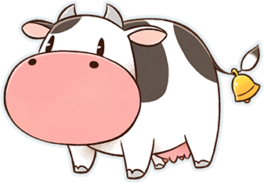
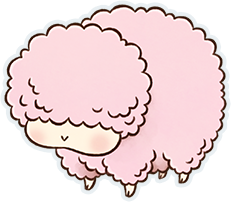
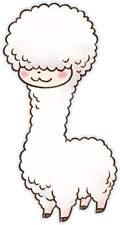
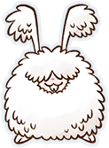
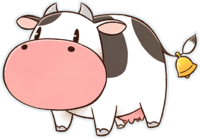
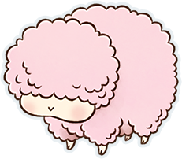
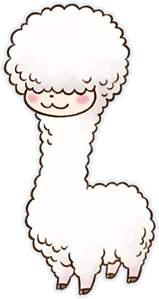
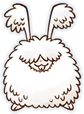
与农作一样，饲育动物也是牧场生活中非常重要的工作。
在矿石镇中，能够饲育的动物有5个种类。
牛有咖啡奶牛、草莓奶牛等4个种类的变种，副产品各不相同。
鸡有两个种类，颜色不同，但副产品相同。
不管是哪一种动物，最初的一只都要去「小鸡与莉莉娅」、「约德尔牧场」购买。
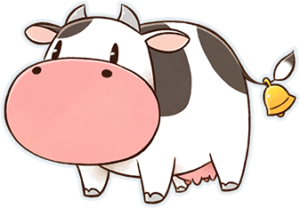
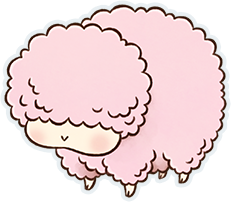
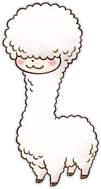
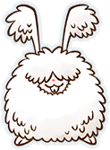
最初就购买价格最合适的鸡来尝试饲育吧！
| 动物 | 贩卖店铺 | 饲育场所 | 饲育数量 （扩建前） |
饲育数量 （扩建后） |
|---|---|---|---|---|
| 鸡 | 小鸡与莉莉娅 | 鸡兔笼舍 | 4只 | 8只 |
| 安哥拉兔 | ||||
| 牛 | 约德尔牧场 | 动物小屋 | 8只 | 16只 |
| 羊 | ||||
| 羊驼 |
在动物小屋的照料使用穿透功能（按住 跑步，可以不被卡位）会很便利。
跑步，可以不被卡位）会很便利。
动物小屋饲育的动物数量增多时可以灵活运用。
而且，在狭窄的小路与居民挤在一起时也可以用按 穿过居民后继续前进。
穿过居民后继续前进。
可以从动物的身上采集到下表中的副产品，表中的采集频率是指每天都喂食的情况下。
安哥拉兔、羊、羊驼如果不喂食，则下一次可以采集的天数会增加。
另外，鸡以外的动物的副产品需要专门的工具采集。
| 动物 | 副产品 | 采集频率 | 必要的道具 |
|---|---|---|---|
| 鸡、茶色鸡 | 蛋 | 每天 | 无 |
| 牛 | 牛奶 | 挤奶器 | |
| 咖啡奶牛 | 咖啡牛奶 | ||
| 草莓奶牛 | 草莓牛奶 | ||
| 水果奶牛 | 水果牛奶 | ||
| 安哥拉兔 | 安哥拉兔毛 | 5天 | 剃毛剪 |
| 羊 | 羊毛 | 7天 | |
| 羊驼 | 羊驼毛 |
重聚矿石镇的动物们是不会死亡的，但是想要获得副产品，每天都需要给动物喂饲料。
说话、刷毛、放牧的话动物的好感度会提高，所以每天都这样做吧。
另外，为动物刷毛需要去铁匠铺购入「毛刷」。
饲料有「鸡兔饲料」和「干草饲料」 两种，根据动物种类所需的饲料是不同的。
培养「玉米」、「牧草」来补充饲料更为实惠。
| 动物 | 所需饲料 | 获得方法 |
|---|---|---|
| 鸡 | 鸡兔饲料 | 在「小鸡与莉莉娅」购买（1个10G） 向「水车磨坊」投入「玉米」（1根可获得30份） |
| 安哥拉兔 | ||
| 牛 | 干草饲料 | 在「约德尔牧场」购买（1个20G） 收割田地里的「牧草」（1个牧草可获得1份） |
| 羊 | ||
| 羊驼 |
「鸡兔饲料」可以放入「鸡兔笼舍」的饲料放置处进行补充，想用「玉米」补充则需要投入「水车磨坊」。
另外，「干草饲料」可以放入饲料放置处、「筒仓」进行补充。
想取出饲料的时候对着饲料放置处按
想放入的时候则手持饲料对着饲料放置处按
「筒仓」与动物小屋的饲料放置处联动，可以在「筒仓」拿放饲料。
手持「玉米」投入「水车磨坊」，1个「玉米」可以补充30份饲料。
在通过放牧喂饲料的情况下，牛、羊、羊驼需要田地中长有足够数量的「牧草」。
但是，鸡和安哥拉兔不需要任何东西，只要每天放牧4小时以上就可以不需要喂饲料。
不过下雨的日子无法放牧，还是需要储备一些饲料的。
动物的好感度会影响产出的副产品的品质。
好感度的数值可以通过每天的照料稍微提升。
数值每上升25则增加1颗心升级至下一阶段。
牛、羊、羊驼一天最多+4。
鸡、安哥拉兔无法刷毛，所以一天最多+3。
| 好感度 | 数值对应 | |
|---|---|---|
| 0 | 0~24 | |
| 1 | 25~49 | |
| 2 | 50~74 | |
| 3 | 75~99 | |
| 4 | 100~124 | |
| 5 | 125~149 | |
| 6 | 150~174 | |
| 7 | 175~199 | |
| 8 | 200~224 | |
| 9 | 225~249 | |
| 10 | 250+ | |
动物的副产品可以从S上升直到变成X。
动物的好感度决定了能取获得的产物。
想获得G以上的品质，除了好感度以外还需要在斗鸡节、评牛节、软绵绵节的活动上获胜。
| 品质 | 好感度 | 特殊条件 |
|---|---|---|
| S | - | |
| M | - | |
| L | - | |
| G | 该动物在相应节日获胜 | |
| P | 该动物在相应节日获胜 放牧时间合计1000小时以上 |
|
| X | 在能够取得P品质的产物后有0.4%的概率取得 |
※ 鸡蛋：S=普通品质的蛋、M=高品质的蛋、L=优良品质的蛋、G=金蛋、P=白金蛋
动物的好感度可以在菜单「关系状况」中查看。
「动物」界面中除了好感度外，还会标记当天是否进行过说话、刷毛、采集过副产品。
该动物在相应节日获胜的话，会显示王冠的标记。
可以在牧场中对动物进行繁殖。
鸡的繁殖只需将蛋放在孵化箱。
除此以外的动物需要使用「人工配种器」进行妊娠，经过一定天数后生下幼崽。
安哥拉兔、羊、羊驼在剪毛以后无法使用「人工配种器」。
想要繁殖安哥拉兔需要扩建「鸡兔笼舍」。
鸡以外的动物 在「小鸡与莉莉娅」、「约德尔牧场」购入与动物相符的「人工配种器」，按 使用。
使用。
孕期的动物无法放牧。
直接喂饲料或放置于孕期饲料箱。
| 动物 | 妊娠天数 | |
|---|---|---|
| 喂饲料 | 不喂饲料 | |
| 鸡 | 3天 | 3天 |
| 安哥拉兔 | 5天 | 10天 |
| 牛 | 21天 | 30天 |
| 咖啡奶牛 | ||
| 草莓奶牛 | ||
| 水果奶牛 | ||
| 羊 | 21天 | 30天 |
| 羊驼 | 21天 | 30天 |
生下的幼崽在经过一定天数后会长大成年。
副产品只能从成年的动物身上取得，所以每天好好照料等待成年吧。
是否喂食不会影响小鸡成长所需日数的长短，直接喂饲料的话好感度会升高。
另外，因为在「约德尔牧场」购入的牛是中型牛，所以想要取得副产品最短也需要经过9天。
| 动物 | 成长天数 | |
|---|---|---|
| 喂饲料 | 不喂饲料 | |
| 鸡 | 7天 | 7天 |
| 安哥拉兔 | 10天 | 15天 |
| 小牛 -> 中型牛 | 14天 | 20天 |
| 中型牛 -> 成年牛 | 9天 | 14天 |
| 羊 | 14天 | 20天 |
| 羊驼 | 14天 | 20天 |
※ 喂饲料指每天都喂饲料，不喂饲料指一次都没有喂过。
※ 小牛会先成长为中型牛（不可产奶），再长大成为成年牛（可产奶）
经过繁殖出生的幼崽最初的好感度即为3颗心，特征是好感度的上限增加1颗心。
因此，在幼崽成年后重复繁殖的流程，最高可以提高好感度至10颗心。
并且，小鸡的好感度上限是在好感度上限最高的成年鸡的上限基础上增加1颗心。
如果在没有养鸡或者只有小鸡的情况下孵蛋，孵出的小鸡好感度为6颗心。（基础5颗心+1）
最初的好感度即为3颗心。
在母亲的好感度上限基础上增加1颗心。
第6世代的动物幼崽，好感度上限可以达到最高的10颗心。
在「赛巴拉铁匠铺」那里获得加工机后，可以对副产品进行加工。
不同加工机所加工出的副产品不同，所以购入想要获得的加工品对应的加工机吧。
加工机的使用方法是手持副产品，投入对应的加工机。
并且在加工品中，黄油是唯一不能出售的，作为料理的材料或送给居民的礼物来使用吧。
| 加工机 | 效果 |
|---|---|
| 蛋黄酱加工机 | 将鸡蛋加工成蛋黄酱 |
| 芝士加工机 | 将牛奶加工成芝士 |
| 黄油加工机 | 将牛奶加工成黄油 |
| 毛线团加工机 | 将安哥拉兔毛、羊毛、羊驼毛加工成毛线团 |
※ 请注意黄油无法出售
鸡蛋加工为「蛋黄酱」、牛奶加工为「芝士」时，无论品质如何都能提高售价。
另一方面，「安哥拉兔毛」、「羊毛」、「羊驼毛」会加工出对应品质的「毛线团」，售价也相同。
要记住，品质为G以上的「羊毛」和「羊驼毛」不加工直接出售所获得的的钱反而更多。
「芝士」只能通过加工牛奶获得，意外的贵重。
「安哥拉兔毛」无论什么品质，加工成「毛线团」后售价都会提高。
| 品质 | 蛋 | 蛋黄酱 | 牛奶 | 牛奶※ | 芝士 |
|---|---|---|---|---|---|
| S | 50 | 100 | 100 | 120 | 250 |
| M | 80 | 150 | 220 | 240 | 380 |
| L | 150 | 230 | 360 | 400 | 540 |
| G | 200 | 300 | 500 | 550 | 700 |
| P | 240 | 450 | 600 | 660 | 820 |
| X | 350 | 800 | 800 | 900 | 1500 |
| 品质 | 安哥拉兔毛 | 羊毛 | 羊驼毛 | 毛线团 |
|---|---|---|---|---|
| S | 240 | 400 | 420 | 530 |
| M | 400 | 700 | 740 | 920 |
| L | 720 | 1300 | 1360 | 1400 |
| G | 1000 | 2500 | 2700 | 2000 |
| P | 1500 | 3200 | 3500 | 2800 |
| X | 1800 | 3600 | 4000 | 3200 |
※ 牛奶：咖啡牛奶、草莓牛奶、水果牛奶
动物可以出场的活动有3种。
获胜能获得奖品，除此之外在斗鸡节、评牛节、软绵绵节获胜还能提高副产物的品质。
评牛节、软绵绵节在好感度8心以上时，能够获胜。
| 活动 | 对应的动物 |
|---|---|
| 斗鸡节 | 鸡、茶色鸡 |
| 评牛节 | 牛、咖啡乳牛、草莓乳牛、水果乳牛 |
| 软绵绵节 | 安哥拉兔、羊、羊驼 |